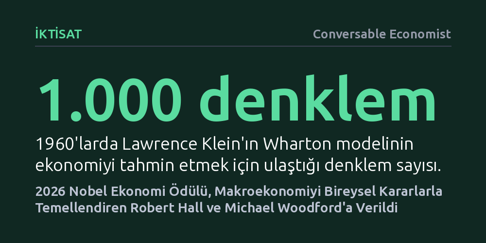

IKTISAT · Conversable Economist · 2026-10-15
2026 Nobel Ekonomi Ödülü, makroekonomik istikrarı tüketici beklentileri ve firma davranışları gibi mikro temellere oturtan Robert Hall ile Michael Woodford’a verildi. Çalışmalar, ekonomiyi dev denklemler yerine bireylerin geleceğe dönük kararları üzerinden kavramamızı sağladı.
Ekonomik krizlerin ve para politikalarının mekanik hesap tablolarıyla değil, bireylerin ve işletmelerin geleceğe dair beklentilerini nasıl şekillendirdiğiyle belirlendiğini gösterir.

Büyük Buhran, ulusal ekonomilerin herhangi bir savaş ya da salgın olmaksızın bir bütün halinde çökebileceğini gösterdiğinde iktisatçılar yeni bir kavramsallaştırmaya ihtiyaç duydu. Norveçli iktisatçı Ragnar Frisch 1933 yılında, sistemin belirli bir kesitini inceleyen mikro analiz ile tüm mekanizmayı bir bütün olarak ele alan makro dinamik analiz arasında ayrım yaparak bu disiplinin temellerini attı. 1940'lara gelindiğinde Simon Kuznets'in gayrisafi yurt içi hasıla tanımı ve Wassily Leontief'in tüm girdileri sütunlara, çıktıları satırlara yerleştiren devasa girdi-çıktı tabloları, ekonomiyi bir bütün halinde ölçülebilir ve hesaplanabilir bir yapıya dönüştürdü.
Bu muhasebe başarısı, doğal olarak geleceği tahmin etme ve olası krizleri önceden engelleme arzusunu doğurdu. 1960'larda Lawrence Klein'ın Wharton modeli gibi bilgisayar gücüne dayalı sistemler 200 denklemle başlayıp zamanla 1.000 denklemi aşan devasa yapılara evrildi. Dönemin iktisatçıları, ekonomideki tüm değişkenler arasındaki ilişkilerin kabaca sabit kaldığı ve doğru politikalarla krizlerin tamamen engellenebileceği konusunda büyük bir özgüvene kapılmıştı. Ancak 1970'ler bu özgüveni yerle bir etti.
İşsizlik düştüğünde enflasyonun yükseldiğini, işsizlik arttığında ise fiyat baskılarının azaldığını varsayan ünlü Phillips eğrisi ilişkisi 1970'lerde çalışmadı. Yaşanan stagflasyon süreci, hem yüksek işsizliğin hem de yüksek enflasyonun aynı anda var olabileceğini gösterdi. 1.000 denklemli dev makroekonomik modellerin mantığı içinde böyle bir tablonun ortaya çıkması teorik olarak imkânsızdı; devasa modeller gerçeğin gerisinde kalmıştı.
Modeller çökünce pek çok iktisatçı mevcut denklemleri yamamaya çalıştı; ancak Robert Hall 1978 tarihli çalışmasıyla sorunun çok daha temel bir yerde olduğunu gösterdi. Makroekonomik toplam talebin yaklaşık üçte ikisini oluşturan tüketim harcamaları, geleneksel modellerde yalnızca mevcut veya yakın geçmişteki gelire dayandırılıyordu. İnsanların ellerine gelir geçtiğinde geçmiş alışkanlıklarına göre bunun belirli bir kısmını harcayıp kalanını tasarruf ettiği varsayılıyordu.
Hall bu bakış açısına temelden itiraz etti. Tüketicilerin harcama kararlarını geçmişe değil, geleceğe bakarak aldığını savundu. İnsanlar ne kadar tüketeceklerine karar verirken işlerinin gelecekte güvende olup olmayacağını, ufukta bir resesyon veya enflasyon riski bulunup bulunmadığını hesaba katıyordu. Eğer mevcut tüketim geleceğe dönük inançlara bağlıysa, tüketimdeki değişimler de bu inançlardaki değişimlerden kaynaklanmak zorundaydı. Gelecekteki inançların nasıl değişeceğini bugünden bilmek imkânsız olduğuna göre, tüketimdeki dalgalanmaların da öngörülemez olması ve istatistiksel olarak bir 'rastgele yürüyüş' izlemesi gerekiyordu.
Bu iddia ampirik bir teste tabi tutulduğunda çarpıcı bir sonuç çıktı. 1.000 denklemli devasa modellerin tüketim tahminleri, tüketimin bir önceki döneme göre rastgele değiştiğini varsayan basit bir olasılık hesabından daha başarılı olamadı. Hall'un bu tespiti, ekonomiyi bireylerin karar alma süreçlerinden kopuk mekanik bir saat gibi gören eski tarz makroekonomi anlayışına vurulmuş en ağır darbelerden biri oldu.
Eski modellerin temel kusuru, ekonominin belirli bir dönemdeki anlık görüntüsünü sunabilmelerine rağmen karar alan tüketicileri, firmaları ya da merkez bankalarını içermemesiydi. Robert Lucas, Finn Kydland, Edward Prescott ve Edmund Phelps gibi iktisatçıların katkılarıyla gelişen bu eleştiri hattı, Michael Woodford'un mimarlığını yaptığı Yeni Keynesyen çerçeveyle somut bir politika aracına dönüştü.
Woodford'un geliştirdiği en yalın Yeni Keynesyen model şaşırtıcı biçimde yalnızca üç temel denklemden oluşur. İlk denklem, doğrudan Hall'un tüketici davranışını ve beklentilerini özetleyen tüketim teorisidir. İkinci denklem, piyasada fiyat değiştirmenin maliyetli olduğu durumlarda kâr maksimizasyonu peşindeki firmaların fiyatları nasıl belirlediğini, yani yapışkan fiyat mekanizmasını tanımlar. Üçüncü ve son denklem ise merkez bankasının faiz belirleme politikasını model içine yerleştirir.
Sadece üç denklemden oluşan bu iskelet, para politikasının ekonomiyi nasıl etkilediğini anlamak için olağanüstü güçlü bir araç sundu. Günümüzde merkez bankaları ve maliye bakanlıkları, kendi ulusal ekonomilerinin ihtiyaçlarına göre bu yapıya yeni değişkenler ve sektörel katmanlar ekleyerek orta ve büyük ölçekli politika modelleri inşa etmektedir.
Robert Hall ve Michael Woodford'un 2026 Nobel Ödülü ile taçlandırılan katkıları, makroekonominin son yarım yüzyılda geçirdiği büyük zihniyet dönüşümünü temsil ediyor. 1960'ların makroekonomisi, genel ekonomik değişkenler arasındaki ilişkilerin zaman içinde sabit kalacağına inanıyordu. Ancak bu yaklaşım; geleceğe dair beklentiler oluşturan bireylerden, eksik rekabet koşullarında fiyatları yavaşça uyarlayan firmalardan ve güvenilirlik peşindeki politika yapıcılardan yoksundu. Kısacası makroekonominin mikro temelleri eksikti.
Buna karşın Woodford'un kurduğu temel modelleme yaklaşımı nihai bir son nokta değil, hâlâ gelişmekte olan bir araştırma programıdır. Nitekim temel üç denklemli yapıda finansal sektörün ve bankacılık sisteminin yer almaması, modelin en belirgin eksikliklerinden biridir. İktisatçılar ve merkez bankaları, bireysel beklentilerin ve piyasa sürtünmelerinin gücünü koruyarak bu modelleri finansal piyasaları da kapsayacak şekilde genişletmeye devam etmektedir.